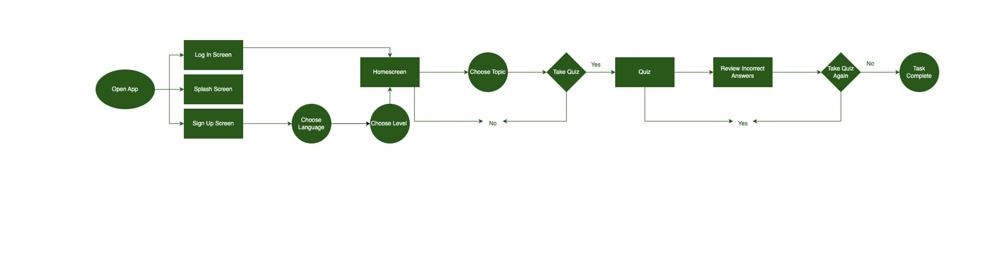
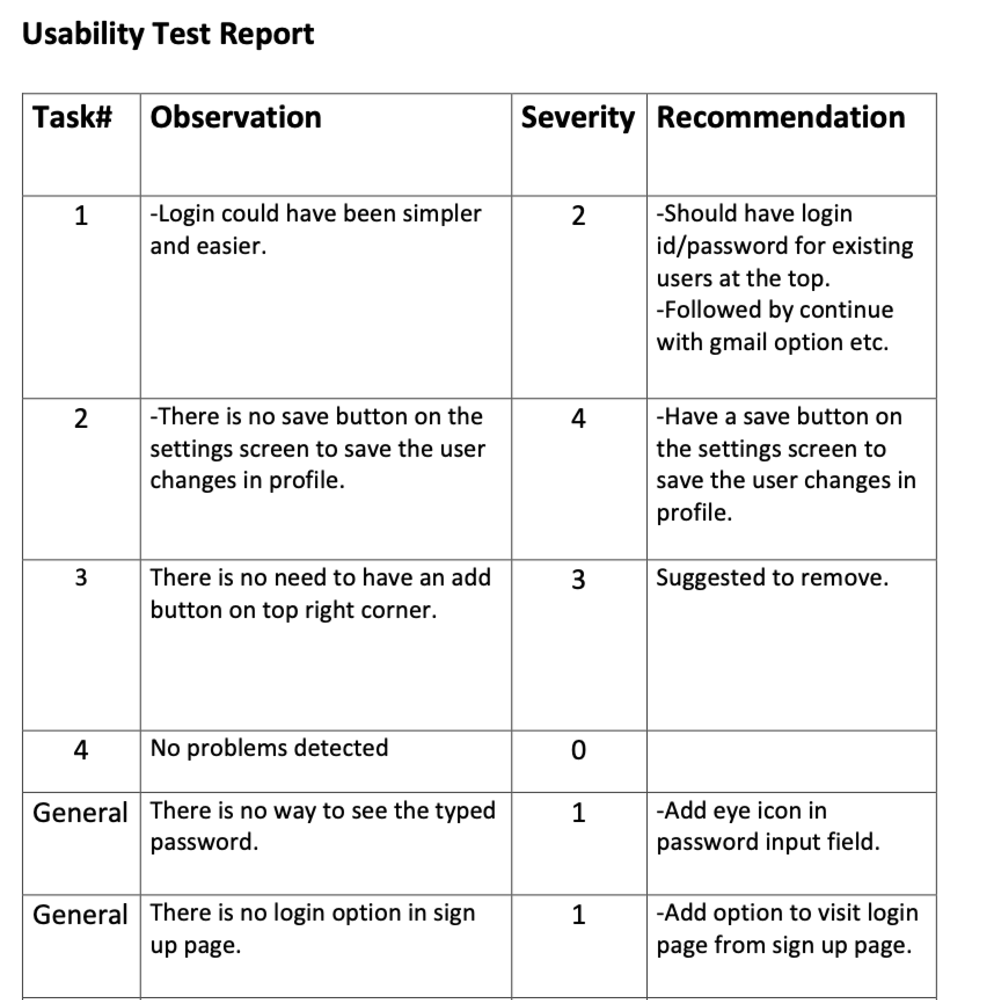

Project Overview
Role
UX Designer
Duration
4 weeeks in June 2022
Background
Wordstock is the first design project I created as part of the UX Design course with CareerFoundry. I followed the steps of the Design Thinking Process to create a low fidelity prototype of Wordstock which I tested on potential users to see how the design could be improved.
Tools
Pen and Paper
Marvel
Competitive Analysis
To start the project, I looked at three Vocabulary Building apps to analyze what is currently on the market
Word of the Day
This app has a clean UI and provides clear navigation flow but does not 100% serve the purpose of learning new vocabulary for the users. The app should provide better way to navigate between the previous and next words. The ability to search for words is good. Paired with its capability of voice in different accents and grouping of words can improve the usability of the application. Though ads are important and driving factor for the free applications but should be more strategically placed in the application and shouldn’t annoy users.
Vocab Junkie
The current state of the app makes it difficult for the users to even sign up and gives a poor users experience. Whole application will need UI overhaul. A better choice of contrast colors combined with strategic placement of different elements will make UI look cleaner. Sign up form seems to be long and can be shortened by just asking name instead of particularly asking first and last name. Name can even be added later in the profile.
Atlas English
The onboarding process makes app easy to navigate. The quiz at the beginning of the app helps to curate the experience to the user’s vocabulary level but it is long and cannot be skipped. The translation feature in this app makes it different from other apps but can be improved by allowing to select different other native languages. By improving some of the app features the user experience can be made even better.
Main Takeaway
Competitive Analysis allowed me to better understand the educational context and reasons users choose vocabulary learning apps.
User Research
I interviewed four people to discover what kind of vocabulary building app they would find useful.
Interview Questions
- Can you describe how your schedule looks like? Walk me through a day in your life?
- When was the last time you had to study new vocabulary? What was the reason?
- If you need to learn something new, how do you approach it? What ways works best the best for you?
- What are some difficulties you find when learning new vocabulary? Why?
- Why do you think learning new vocabulary is difficult?
- What features would you like to see or feel would be useful in a vocabulary app?
Name
Ana
Age
31
Profession
Marketer
Doing
- I work from home, don’t really have a fixed schedule as a freelancer (yet), so everyday can be different.
- I used to use a dictionary to look up for new words, but now I use google translate.
- Last time when, I studied new vocabulary was when I moved to Belgium and did an attempt to study Flemish, as it’s the 2nd local language where I live.
Thinking
- I believe if I don’t use the words constantly, I forget it very quickly.
- I believe that in order to remember new words, you need to use them regularly.
- think because you don’t always get to practice with someone day-to-day what you learned, so you forget it after a while.
- I believe that to learn new words in another language is through immersion and exposure to native speakers.
Feeling
- I don’t really feel frustrated learning new words because we have the internet and access to all types of information at our fingertips.
- I get excited when I challenge myself by guessing the meaning of a word.
- I will really feel motivated if app feels like a game, it makes it more fun to learn.
- I feel adding feature like translation in various languages would be helpful for native speakers for better understanding.
Interview Analysis
I listened to the recordings of the interviews and reviewed my notes to organise the interviewees’ comments into ‘Doing’, ‘Thinking’ and ‘Feeling’ statements.
Main Takeaway
The interviewees want an app that teaches them a new language through a quiz format , adding features like translation in various languages and add audio, video and images to provide added context.
Understanding the Problem
Proto-Persona
I united the key insights from the research of competitor apps and observational data from the user interviews to determine which direction to take with my project. I decided to design a vocabulary building app to learn a new language.
I developed a Proto-Persona to represent the needs, goals and behaviors of the potential users.
Demographics
Name: Joseph
Nationality: Nigerian
Location: United States of America
Profession: Architect
Slogan
“Making time for the things you have to do, as well as the things you want to do.”
Behaviors
- Flexible work schedule, Working few days from office and other days from home.
- Often travels for work.
- Reads regularly to work on his English language to communicate without hesitation.
- Often attends meetups to find people with similar interests.
- Uses multiple social media channels including Facebook, Instagram and LinkedIn.
Needs and Goals
- An app that offers features like translation in various languages.
- An app that offers audio, video and images to provide added context.
- An app that can track progress over time.
- An app that offers a feature that allow you to quiz yourself and others that will help remember words.
User Stories
- As a Nigerian immigrant whose second language is English, I want to be able to translate words into my native language so that I can understand better.
- As a self-learner, I need an app that allow me to quiz myself online so that will be helpful for me remembering words via challenges and quiz.
- As English is my second language, I want to be able to hear words spoken out loud so that my pronunciation of words and sentences are correct.
- As a person who travels quite often, I want an app that provides feature for adding notes so that can be referred in offline mode as well.
Problem Statement - What Does Joseph need?
Joseph (Architect) needs a way to be able to learn English vocabulary for improving English language because he is an immigrant and English is his second language.
We know this will be true when we see that, Joseph comfortably communicating with people at work in English.
Hypothesis Statement - What can we do?
We believe that creating a visually oriented interface and providing text translation for Joseph we will improve his familiarity with English language.
We believe that creating game like features with tasks and challenges for joseph will make his vocabulary learning journey more interesting.
Information Architecture
I wrote Task Analysis and drew User Flows for for a couple of features that I thought Anna would like from an app that teaches her a new language.
Wireframing & Prototyping
I drew initial sketches of Wordstock and found that sketching is a quick and effective way to create low-fidelity wireframes. I collated the wireframes and made a clickable prototype using the online tool Marvel.
Sign Up Screens
Quiz Screens

Create Flashcard Screens
Usability Testing
Usability Test Plan
Scope: Low fidelity wireframes and prototypes will be used to test the usability and navigation of the Wordstock app.
Schedule: Usability test will be conducted during 5th to 7th August in person.
Sessions: A total number of 3 participants will be tested for 15 to 20 mins.
Participants: Bhushan 32 Years Q/A Analyst, Shivani 31 Years Sales Manager, Pranjali 27 Years Software Engineer
Equipment: Test participants will access prototype in marvel via phone, computer or other device in order to view and interact with it.
Scenario Tasks
I asked the participants to complete four scenario tasks and I recorded their comments. I wanted to see how easily they navigated the prototype and find out what problems they had completing the task.
- You are moving to India and want to start learning Hindi. Your friend has recommended the language learning app Wordstock. Open the app and sign up.
- Although you are a beginner of learning Hindi, you already know how to greet people and how to say goodbye. Choose the topic ‘Greetings’ and take a quiz to see how much you already know.
- You have been in India for a couple of days and you would like to record the names of Indian dishes you like. Create a set of flashcards with the name and description of the dishes.
- A few days later, you are at a Indian restaurant and cannot remember the name of your favourite Indian dish. Look up the word on the set of flashcards you created.
Test Report
I summarized the participants’ comments into observations in a usability test report. I gave each observation a severity rating based on Jacob Nielsen’s scale and came up with recommendations to solve the issues.
Prototype Improvements
Signup Screen
Added continue with google option, also login option for existing users. Added eye icon in password input field in both login and signup screen.
Review Flashcards Screen
View Flashcards in a list with a scrollbar Tab Bar Designed a new ‘Create Flashcard’ icon
Concluding thoughts
Future Iterations
My next step will be to create a high-fidelity prototype of Wordstock and test that version on potential users. I will change the quiz so that users get immediate feedback whether their answer is right or wrong. I will create an option so that the user only has to retake their incorrect answers. I will include a feature to allows the user to upload multimedia to their flashcards. I would like to design onboarding screens which will describe what you can do and how to use the app.
Main Takeaway
Throughout the creation of Wordstock, I have focused on the user by conducting user interviews and usability testing. This enabled me to build a user-centered design of the app.